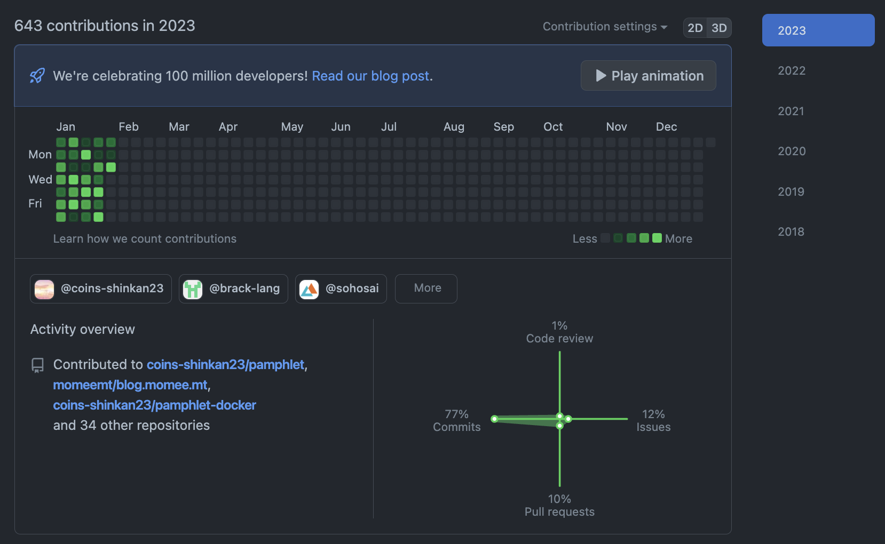

今週の日報
- 2023.01.22
- 2023.01.23
- 2023.01.24
- 2023.01.25
- 2023.01.26
- 2023.01.27
- 2023.01.28
- 2023.01.29
- 2023.01.30
- 2023.01.31
やったこと
- 新歓パンフレット作成
- OOSC 第1章読んだ
- Vimのキーバインドの勉強
- jsys ネミvol.1
- kdb_parseに機能を追加した
- twine-backendの実装
- The SATySFi bookを読んだ
- 局ミに出席した
- 洗濯機が給水しなかったので蛇口について勉強した
- QRのモックを作成した
- SOSミに出席した
- jsysの引き継ぎを受けた
- ARE最終報告書を提出
今週[1]はjsys関連の作業が多かった。
普通に時間がなく、来週からまた締切に追われる生活が始まるかと思うとやや憂鬱。
料理した
- 鰹のパスタ
- 鰹の中華風たたき
- シチュー
- チャーシュー
- 味玉
GitHub
反省
生活リズムが狂った。まあ、1ヶ月経ったら意識もこうなるから仕方ないかもね。
目標
2月1日〜7日の目標
- 新歓パンフレットを完成させて担当の先生から承認をいただく
- QRのモックを完成させて局員にタスクを割り振る・環境構築docsを書く
- 5日以外、22:30までに就寝する
- YouTubeを見ない
- VM環境を整備する
- sos23-backendをローカルで開発できるようにする
- ゼロから学ぶRystを読み終える
- ネスペの申し込みをして勉強計画を立てる
- Habitifyの設定をする
- Sortedでスケジュール管理を再開する
- mejiroのデプロイをする（GCActions - Create a repository dispatch event）
- 金フレ 1〜100
脚注
- 10日もあった